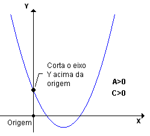
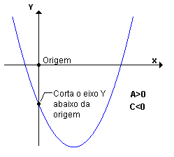

Coeficiente "c"
Numa equação do 2°grau o "c" não vem acompanhado, e quando este possui o valor 0 a equação se torna
(ax² + bx = 0)
, dessa forma, um dos valores de x será 0.
A função do coeficiente “c” é nos indicar onde a parábola “corta” o eixo Y:

(c > 0)
:
Se for positivo irá “cortar” acima da origem.

(c < 0)
:
Se for negativo irá “cortar” abaixo da origem
Voltar